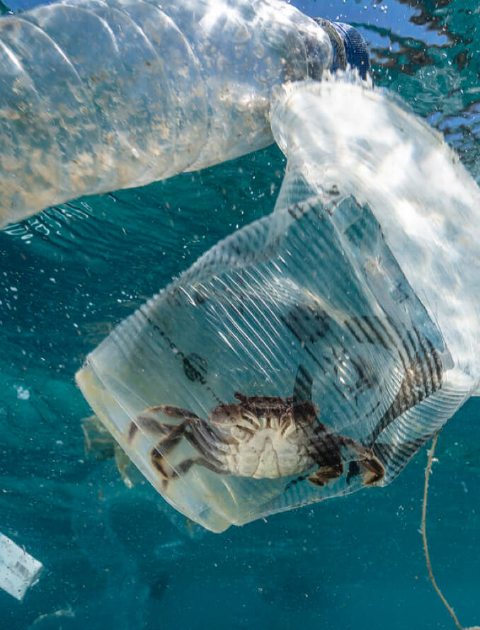
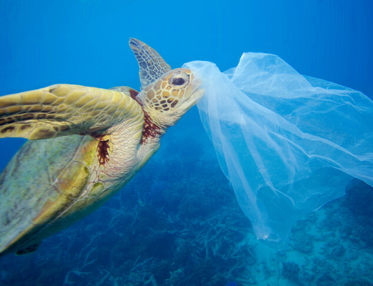
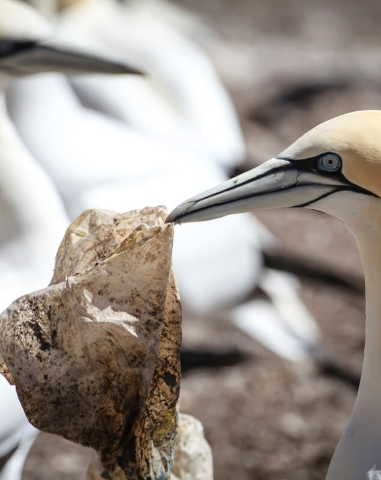
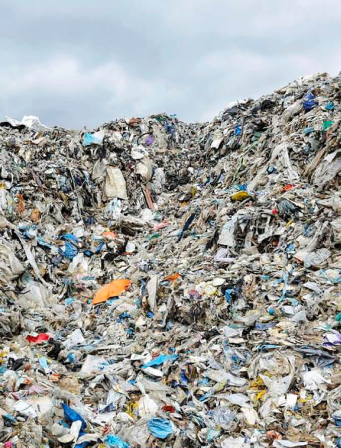

我們每一次的消費，都在為我們想要的購物環境投票，而你想要怎樣的購物環境呢？
#PLASTICFREE
PROTECT OUR ONE AND ONLY EARTH
輕鬆減塑的第一步：從選擇購物環境開始
超市現況
超市減塑
全臺十大零售通路內的生鮮蔬果、烘焙、熟食和蛋類區
約
77%
的品項
使用塑膠包裝
這些塑膠短短被我們用不到
1
週
就會造成環境超過
1
世紀的負面影響




我們鼓勵零售商怎麼做？
【希望臺灣十大連鎖賣場公開承諾】
1
提出總體減塑政策
超市減塑需要長期的規劃！零售商減少塑膠使用足跡，需要有完整的減塑政策，才能讓企業確實履行企業社會責任。
2
提出總體減塑政策
超市減塑需要長期的規劃！零售商減少塑膠使用足跡，需要有完整的減塑政策，才能讓企業確實履行企業社會責任。
3
提出總體減塑政策
超市減塑需要長期的規劃！零售商減少塑膠使用足跡，需要有完整的減塑政策，才能讓企業確實履行企業社會責任。
4
提出總體減塑政策
超市減塑需要長期的規劃！零售商減少塑膠使用足跡，需要有完整的減塑政策，才能讓企業確實履行企業社會責任。
我們可以怎麼做？
源頭減塑
產生塑膠垃圾的速度，遠超過環境負載的能力，從源頭減少才是根本解決之道。
重複使用
每個物品的製造都在消耗資料，要物盡其用，而非用幾次就丟棄。
重新思考消費習慣
現代人生活講求快速、方便，但讓我們方便的同時，是不是讓地球增加更多負擔了呢？
PROTECT OUR ONE AND ONLY EARTH